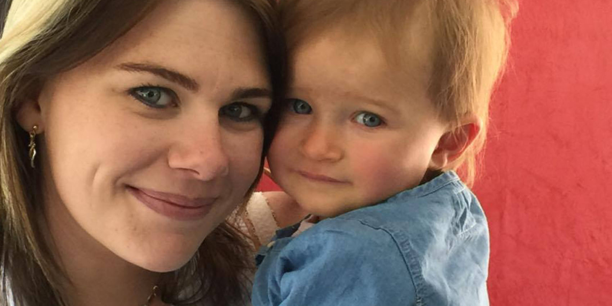

Sandy
- Accueil
- Témoignages
- Sandy

C’est avec joie que le 21 février 2016, nous avons donné naissance à notre fille Loëva. Le parcours ne fut pas simple. Nous avons eu recours à l'aide médicale par fécondation in vitro. Après plusieurs tentatives, j'ai réussi à tomber enceinte, mais la grossesse s'annonçait compliquée. Nous attendions des vraies jumelles (j’avais un suivi intensif et du repos obligatoire).
À 4 mois et demi, lors d'une échographie de contrôle, nous apprenons que le cœur de l'une de nos filles avait cessé de battre, et que la deuxième pouvait avoir de graves séquelles neurologiques. Nous sommes choqués, désemparés. Nous aimions profondément ces deux petites poupées qui grandissaient dans mon ventre.
On nous explique que l'on ne peut pas extraire ma fille décédée, car elles partagent le même placenta. On nous dit aussi que lors du décès de sa sœur, mon autre fille a souffert d'ischémie, d’un manque d'oxygène et que des lésions neurologiques irréversibles peuvent apparaître. Nous rentrons à la maison, le cœur déchiré et moi avec mon bébé mort dans le ventre.
Les semaines s'écoulent : longues, douloureuses, et pleines de tristesse. Nous réalisons deux échographies neurologiques qui nous apprennent qu'il n'y a pas de lésion apparente, mais qu'un IRM cérébral devra être réalisé à 8 mois !
À 6 mois, j’ai perdu les eaux et suis restée hospitalisée et alitée, car il fallait retarder au maximum l'accouchement afin que notre fille prenne du poids. J'ai accouché à 7 mois de Loëva, une merveilleuse petite poupée de 2.150 kg pour 45 cm.
On s'aperçoit rapidement qu'elle a une cicatrice sur la tempe. Lors de l'autopsie de sa sœur, l'hypothèse la plus probable était que les filles étaient siamoises au niveau du crâne, et qu'en se séparant naturellement à quelques semaines, la deuxième avait trop de séquelles au niveau du crâne.
Nous rentrons à la maison : Loëva est un bébé magique qui fait rapidement ses nuits et qui reste sereine dans son parc. Elle remplit d'amour notre famille. Nous partons en vacances, les gens sont surpris car elle ne pleure presque pas, sourit à profusion et s'interroge sur le monde extérieur. La vie nous a offert le plus beau des cadeaux. Nous sommes heureux, comblés et complètement love de cette merveille.
Le 24 janvier 2017, nous lui avons fait le rappel des vaccins Infanrix hexa et Prevenar 13. Le lendemain, alors qu'elle était chez la nounou, elle a eu de nombreux épisodes de vomissements, ce qui nous a conduits chez le pédiatre.
Celui-ci a conclu à une gastro-entérite, mais après une nuit et une matinée sans amélioration, nous l'avons emmenée aux urgences. Après de longues heures à attendre qu'ils se décident à la perfuser, nous avons été placés en chambre.
Les jours passent, ma fille perd énormément de poids, vomit toujours et personne ne s'occupe d'elle. Aucun examen n'est réalisé, aucun médecin ne vient nous voir. Rien n’est fait sauf cette pose de perfusion pour permettre de la réhydrater, et un peu de paracétamol car ma fille souffre.
Au bout de 4 jours, ils posent enfin une sonde gastrique pour l'alimenter et là, le résultat est quasiment immédiat : arrêt des vomissements, reprise de tonus et de couleur, moins de cris…
Au matin du 6ème jour, son état était bon et nous devions sortir le lendemain, sauf que Loëva s'est mise à loucher, chose qui ne s'était jamais produite auparavant. Un rendez-vous avec l'ophtalmologue a mis en évidence la présence d'hémorragies rétiniennes en flammèches, visibles au fond d'œil. Celles-ci sont sûrement liées aux efforts de vomissements d’après leurs explications. Nous faisons ensuite passer un scanner à Loëva, qui indique une hydrocéphalie externe. Une IRM cérébrale est également réalisée.
La descente aux enfers commence… Le neuropédiatre nous explique de façon directe et brutale que Loëva a deux hématomes sous duraux et qu'il va aller faire des radios complètes du squelette, et qu'un signalement pour un syndrome du bébé secoué a été fait.
Nous ne comprenons pas ce qui se passe, mais ne sommes pas trop inquiets pour le signalement. Nous savons que toutes les radios seront bonnes, que nous n'avons jamais fait le moindre geste brutal envers Loëva, et nous avons confiance en la nounou. Par contre, nous sommes terriblement angoissés concernant l'état de santé de notre fille. Qu’a-t-elle ? Est-ce grave ? Peut- elle avoir des séquelles ? De quoi souffre-t-elle ? À ce jour, nos questions sont toujours sans réponses…
Effectivement, les médecins confirment qu'elle n'a aucune lésion osseuse, aucune fracture ni hématome. À partir de ce moment-là, notre vie s'est arrêtée et nous avons basculé en enfer. Sentant sur nous de mauvais regards de la part du personnel soignant, nous avons le sentiment que nous sommes vus comme des terroristes, jugés et surveillés.
Nous faisons des recherches sur Internet et comprenons que le signalement est grave. La gendarmerie nous convoque et une ordonnance de placement est prise. Des personnes sont venues pour emmener Loëva dans le Var, à plus de 150km de chez nous, dans une pouponnière.
C'est insupportable, mais nous décidons de nous battre. Nous prenons des avocats redoutables qui multiplient les démarches. Peu après : surprise !!!! Le même neuropédiatre qui nous a accusés revient soudainement sur ses propos. Il refuse que Loëva aille en pouponnière. Il veut la garder à l'hôpital jusqu'à l'audience devant le Juge des enfants, pour que l'on reste avec elle, vu qu'il n'y a pas d'injonction interdisant de rester avec elle à l'hôpital. Ce même neuropédiatre adresse une note à la Juge des enfants, et termine en marquant, je cite : « Ces micro-hémorragies n'évoquent pas le syndrome du bébé secoué, mais plutôt des micro-traumatismes liés à l'hyperpression due aux efforts de vomissements ». Nous avons « la chance », dans notre malheur, de pouvoir ainsi rester auprès de notre fille en attendant l'audience du 22 février 2017. Notre poupée a eu 1 an, c’est dans une chambre d'hôpital que nous l'avons fêté, alors que son état s'était nettement amélioré.
C'est alors confiants que nous nous sommes rendus au tribunal. L'enquête démontre que nous sommes de bons parents et que Loëva vit dans un environnement sain et affectueux. De plus, les médecins reconnaissent que ce n'est pas un bébé secoué, et l'avocat a réuni des attestations de nos proches ainsi que des photos, sans oublier le dossier médical anténatal de Loëva. Rien ne justifie de prolonger le placement !
Et pourtant si !!! Le rapport du médecin légiste n'est pas encore apporté au dossier, donc la Juge ne prend aucun risque et décide de placer Loëva. On nous enlève notre fille, notre oxygène... Nous avons le cœur brisé et la douleur est atroce. Nous rentrons seuls, sans notre fille dans nos bras. Une mesure d'investigation est demandée, la guerre est déclarée ! Nous allons nous battre et continuer de clamer notre innocence, jusqu'à ce que l'on récupère notre enfant. Nous ne voyons pas Loëva tous les jours, et ne sommes pas là le matin à son réveil, ni le soir pour la rassurer et l'endormir.
Ma fille pourtant si souriante a désormais le regard triste, vide. Quand nous la voyons parfois juste 20 minutes, les retrouvailles sont intenses, mais les aux revoir déchirant. Je l’entends encore hurler de douleur lorsque nous partons. Lors de son placement, suite à une IRM de contrôle, les médecins constatent qu'il y a de nouveaux saignements spontanés. Impossible pour nous de l'avoir encore secouée vu que nous ne la voyons jamais seuls !
Grâce au travail professionnel des assistantes sociales, et notre volonté de ramener Loëva à la maison, une audience est ordonnée pour le 15 avril 2017. Victoire ! La mesure de placement est levée, et Loëva rentre avec papa et maman a la maison !!!! Une assistance éducative en milieu ouvert est mise en place, et une place en crèche est prévue.
Depuis, nous nous sommes tournés vers un autre hôpital afin de rechercher les causes et les réponses face aux hématomes et saignements intracrâniens que ma fille a fait, car personne ne cherche.
À ce jour, l'enquête pénale est toujours en cours. Nos familles et nos proches ont été interrogés par la gendarmerie, et la mesure d'investigation est finie. Le rapport est excellent. L'AEMO a également demandé à stopper son intervention, car ils n'ont rien à signaler de négatif et ne peuvent que constater que l'état de santé de Loëva est parfait. Elle n'a aucune séquelle et se développe convenablement.
Nous espérons un classement sans suite ! Malheureusement il faut un coupable pour la justice ! C'est donc avec cette angoisse que nous profitons de chaque instant en famille…